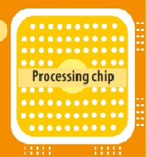
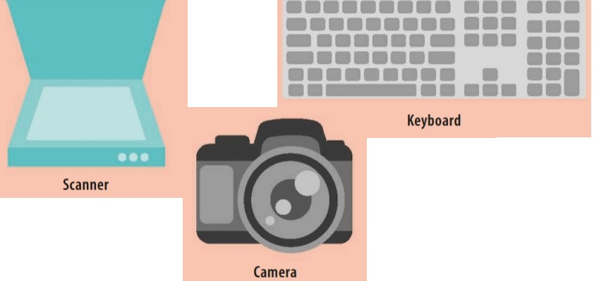
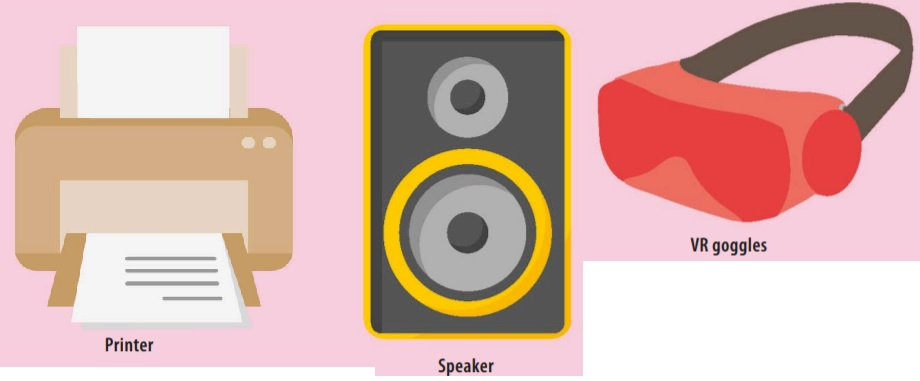
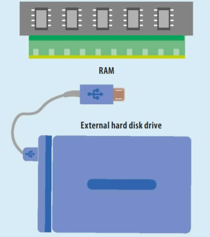

Hardware devices are grouped into several categories. They can either be integral to the computer (such as a motherboard) or attached to it via cables, Wi-Fi, or Bluetooth. Hardware devices that aren’t an integral part of the main computer unit, such as keyboards, mice, screens, printers, and scanners are called peripherals.
Mobile phones and tablets usually have integrated hardware devices and don’t need peripherals. Here are some common hardware devices.
 These devices take data and instructions to produce new variations of data.Computers may also have specialized processing devices that deal with graphics or audio and video signals.
 These devices are used to input data or instructions. Some input devices, such as scanners and cameras, allow the input of digitized information that can be stored or processed.
 These devices take data from the computer and present it to the user. Newer output devices include virtual reality (VR) goggles that immerse users in a 3D world.
 These devices enable computers to save data when they are not powered on. Apart from hard drives and random access memory (RAM), storage devices also include USB pen drives and memory cards.